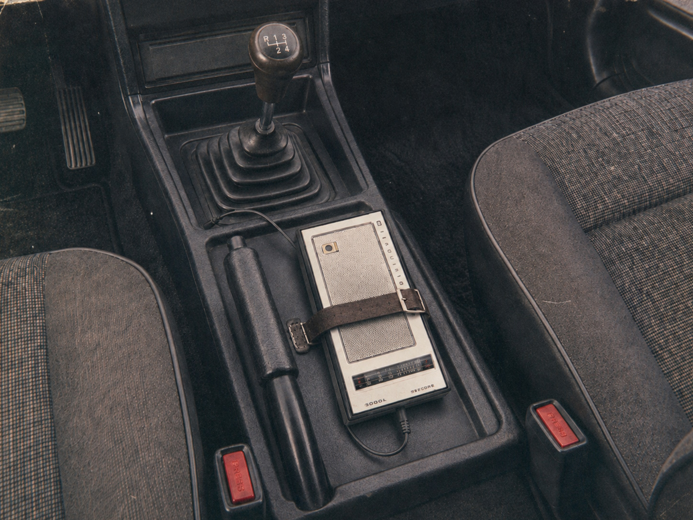
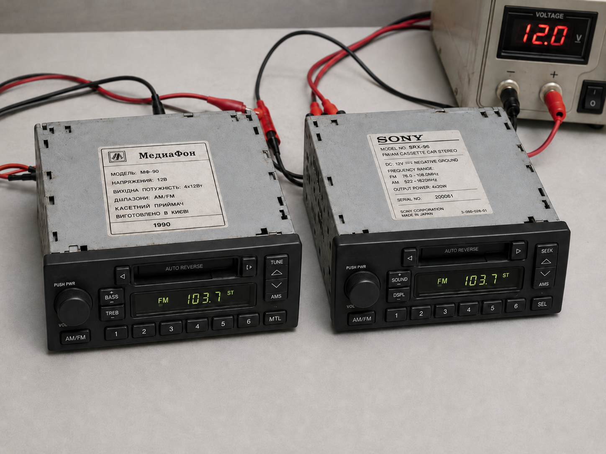

F-KAP Gerri
F-KAP Gerri — семейство массовых легковых автомобилей компании F-KAP, выпускающееся с 1975 года. Серия была создана как доступный автомобиль для широкого круга покупателей и на протяжении пяти десятилетий сохраняла основную концепцию обычного четырёхдверного седана без выраженной ориентации на престиж или высокую мощность.
За время существования Gerri прошёл путь от предельно простой машины с отдельно устанавливаемой печкой и практически пустым салоном до современного автомобиля с кондиционером, автоматической коробкой передач, бортовой электроникой и подготовкой под сторонние мультимедийные системы. При этом F-KAP традиционно медленно менял исправную техническую основу, предпочитая обновлять кузов, салон и отдельные эксплуатационные решения.
В поздних поколениях важной частью серии стали ремонтопригодность, долгосрочная поддержка запчастями и сравнительно свободное отношение компании к самостоятельным доработкам автомобиля владельцем.
F-KAP Gerri
F-KAP Gerri — первая модель семейства, представленная в мае 1975 года. Автомобиль создавался как новая массовая легковая машина F-KAP после длительного застоя гражданской линейки. На раннем этапе проект носил рабочее обозначение F-KAP Arahis.
Предпосылки
К началу 1970-х годов положение F-KAP в массовом легковом сегменте заметно ухудшилось. Компания продолжала выпуск существующей техники, однако после событий 1968 года разработка новых гражданских автомобилей двигалась значительно медленнее. Одновременно на внутреннем рынке становились всё заметнее советские автомобили.
В 1972 году руководство F-KAP решило создать новый «народный автомобиль», который должен был быть достаточно дешёвым для обычного покупателя и при этом не являться прямой копией одной советской или американской машины.
Разработка
Инженеры изучали автомобили АвтоВАЗа, японских, южнокорейских и европейских производителей. Основной задачей было понять, какие элементы действительно нужны обычному владельцу, а от каких можно отказаться ради снижения цены.
Основной дизайн автомобиля был подготовлен в 1974 году. В конце того же года конструкцию дополнительно скорректировали, после чего началась подготовка серийного производства.
Конструкция и салон
Gerri получил рядный четырёхцилиндровый двигатель мощностью 76 л.с. и четырёхступенчатую механическую коробку передач.
Салон выполнялся максимально просто. Автомобиль не имел большого количества декоративных элементов и дополнительного оборудования, поскольку любой необязательный узел рассматривался как причина увеличения конечной цены.
При запуске использовался слоган «Автомобиль, который позволит себе каждый».
Отопление
Одной из наиболее необычных особенностей первых машин стало отсутствие печки в стандартном оснащении на большинстве рынков.
Отопитель продавался отдельно. Владелец мог связаться с F-KAP, сообщить адрес, после чего завод отправлял готовый комплект, который устанавливался в мастерской.
Для холодных районов схема отличалась. В частности, часть автомобилей, поставлявшихся в северные районы СССР, получала печку ещё на заводе.
Выход на рынок и экспорт
Продажи начались в мае 1975 года. Одновременно Gerri начали поставлять в СССР и КНР.
В СССР автомобиль оказался в необычном положении: по назначению он был обычным массовым седаном, однако формально являлся иностранной машиной из самостоятельного СКР. Из-за этого даже сравнительно простой Gerri мог восприниматься как более престижный автомобиль.
В Китае простота конструкции сделала машину удобной для служебного, ведомственного и хозяйственного использования.
Экспорт в капиталистические страны
В феврале 1976 года после смягчения экспортной политики F-KAP отправил пробные партии приблизительно по 2000 автомобилей в Японию, Южную Корею и ФРГ. Цена составляла около 4800 долларов.
Первая японская партия была ошибочно выпущена с левым расположением руля. В 1977 году автомобиль получил нормальную праворульную версию и изменённую светотехнику.
В дальнейшем Gerri начали поставлять во Вьетнам, Тайвань и на отдельные африканские рынки. После слабых результатов в ФРГ F-KAP практически отказался от активного продвижения первого поколения в Западной Европе.
Модернизация 1980 года
В 1980 году экспортная версия получила обновлённый салон. Для её производства использовались мощности нового предприятия в Шентахоре, ориентированного в том числе на морские экспортные поставки.
При разработке инженеры посещали Японию и измеряли размеры распространённых переносных радиоприёмников. В результате позади ручного тормоза появилась специальная ниша, в которую можно было установить переносное радио.

Радиоприёмник подключался к электрической системе автомобиля и не расходовал собственные батарейки. Для удержания устройства применялся небольшой ремешок.
Также появилась новая пластиковая приборная панель, часы с отдельной батарейкой формата AA и крепление для небольшого вентилятора.
Экспортная машина подорожала приблизительно к 4850 долларов. СССР и Китай некоторое время продолжали получать более простую конфигурацию.
Поздний период
После модернизации 1980 года автомобиль почти не менялся в течение следующих девяти лет. На фоне быстро развивавшихся японских, корейских и европейских машин Gerri постепенно становился морально устаревшим.
К 1989 году F-KAP уже готовил полноценного преемника. Оставшиеся у дилеров автомобили первого поколения было решено больше не распродавать обычным способом.
Бесплатная раздача
В 1989 году дилерам F-KAP было предложено бесплатно раздать оставшиеся автомобили. Акция позволяла максимально быстро очистить склады перед появлением нового поколения.
Решение вызвало очереди на нескольких рынках и одновременно резко снизило стоимость уже существовавших подержанных автомобилей первого поколения.
Значение для серии
Первый Gerri сформировал основную формулу семейства: обычный автомобиль не должен становиться сложнее и дороже, если дополнительное оборудование не требуется большинству владельцев.
Одновременно модель показала слабость этого подхода: длительное сохранение исправной конструкции может привести к серьёзному моральному устареванию.
F-KAP Gerri 1990
F-KAP Gerri 1990 — второе поколение семейства, представленное после окончания длительного выпуска первоначальной модели. Автомобиль стал значительно более полноценным по оснащению, сохраняя при этом положение доступного массового седана.
Предпосылки
К концу 1980-х годов прежний Gerri заметно отставал от иностранных автомобилей. После открытия внутреннего рынка Кивиша проблема стала особенно серьёзной: F-KAP предстояло напрямую конкурировать с японскими, европейскими и другими зарубежными производителями.
Разработка
Новая машина получила полностью другой кузов в характерной для второй половины 1980-х годов угловатой стилистике. В Японии позднее отмечали внешнее сходство с отдельными массовыми японскими автомобилями того периода, однако конструкция не являлась прямой копией одной конкретной модели.
Карбюраторный двигатель развивал 95 л.с..
Салон и оснащение
В отличие от первого поколения, печка теперь входила в обычное заводское оснащение.
Автомобиль получил полноценную приборную панель, штатные часы и встроенный радиоприёмник производства MediaFon.
Также применялись чёрные литые колёсные диски, боковые повторители указателей поворота и дополнительные недорогие элементы безопасности.
На внутреннем рынке цена составляла около 5000 долларов.
Экспорт 1991 года
Первые крупные экспортные поставки нового поколения начались в СССР и КНР.
Примерно через месяц пробные партии приблизительно по 1000 автомобилей направили в Южную Корею, США и несколько европейских стран.
Для Японии и Великобритании заранее разрабатывались праворульные версии.
Скидка 91%
В 1991 году F-KAP провёл одну из самых известных ценовых акций в истории марки.
При обычной западной цене около 5200 долларов на один месяц была введена скидка 91%.
Автомобиль временно стоил 468 долларов.
В СССР вместо полной акции применялась скидка около 40%.
После окончания месяца цена вернулась к обычному уровню.
Япония и Великобритания
Праворульные автомобили появились позднее. Первый месяц они продавались по стандартной цене, однако спрос оказался сравнительно спокойным.
После этого специально для Японии и Великобритании F-KAP временно ввёл скидку 80%, снизив цену приблизительно до 1040 долларов.
Надёжность
В течение 1990-х годов второе поколение стало одним из главных источников репутации Gerri как долговечного автомобиля.
Простая карбюраторная конструкция, механическая коробка передач и сравнительно несложная электроника хорошо переносили продолжительную эксплуатацию.
После крупных скидочных кампаний F-KAP практически перестал aggressively рекламировать модель, рассчитывая на постепенное распространение репутации через самих владельцев.
Запасные части
Важной частью эксплуатации стала долгосрочная поддержка старых автомобилей.
Для отечественных автомобильных производителей действовало правило, обязывавшее обеспечивать свои машины запасными частями в течение не менее 45 лет.
Поэтому F-KAP не ограничивался остатками старых складов. Некоторые детали для ранних Gerri продолжали производиться заново спустя десятилетия.
Переход от MediaFon к Sony
В 1996 году MediaFon прекратил деятельность.

Первое время F-KAP использовал оставшиеся складские радиоприёмники, после чего обратился к японской компании Sony.
Sony получил размеры и технические данные прежней системы и разработал замену, совместимую с уже существующей приборной панелью и проводкой Gerri.
В дальнейшем Sony стал постоянным поставщиком аудиосистем для серии.
Значение для серии
Второе поколение окончательно показало, что дешёвый Gerri больше не обязан быть почти пустой машиной.
Именно с ним долговечность, длительная поддержка запчастями и совместимость старых автомобилей стали важной частью репутации семейства.
F-KAP Gerri Gen3
F-KAP Gerri Gen3 — третье поколение серии, представленное в 2000 году. Работы над автомобилем начались в 1999 году, когда F-KAP решил сократить привычно длинные циклы производства одного кузова.
Разработка
Gen3 получил полностью новый кузов и салон. Главным техническим изменением стал переход на инжекторный двигатель мощностью 120 л.с..
Несмотря на заметное увеличение мощности, автомобиль не получал спортивного позиционирования и оставался обычным массовым седаном.
Оснащение
В автомобиле появился штатный кондиционер, встроенная сигнализация и бортовой компьютер, информация которого выводилась на приборную панель.
Радиоприёмник поставлялся компанией Sony.
В подлокотнике также появился подстаканник, который первоначально воспринимался на части рынков как несколько странная деталь, но впоследствии стал обычным элементом салона.
Автоматическая коробка передач
В 2002 году появилась более дорогая версия с автоматической коробкой передач.
Базовая механическая версия при этом не исчезла из производства. Автомат рассматривался не как признак отдельной дорогой комплектации, а как второй обычный вариант автомобиля.
Новая версия особенно расширила возможности продаж в США, Японии и других рынках, где автоматические коробки уже были привычны для массовых автомобилей.
Значение для серии
Gen3 стал основой Gerri начала XXI века. Именно на этом поколении закрепились инжекторный двигатель, кондиционер, современная электронная приборная часть и выбор между механической и автоматической коробками передач.
F-KAP Gerri Gen4
F-KAP Gerri Gen4 — четвёртое поколение серии, представленное в 2006 году. Модель получила новый кузов и интерьер, однако большая часть основной механики была сохранена от предыдущего автомобиля.
Разработка
Инжекторный двигатель мощностью 120 л.с. сохранили, поскольку F-KAP не видел практической необходимости увеличивать мощность обычного массового седана.
Основные изменения двигателя были направлены на небольшое снижение расхода топлива.
Автомобиль продолжал выпускаться как с механической, так и с автоматической коробкой передач.
Sony сохранил роль поставщика штатного радиоприёмника.
Цена
В 2008 году F-KAP установил максимальную цену Gerri на внутреннем рынке.
Она не должна была превышать 950 000 киш.
При курсе около 56 киш за доллар это соответствовало приблизительно 17 тысячам долларов.
После этого цена фактически стала одним из постоянных ограничений при разработке следующих поколений.
«Серебристый холод»
В том же 2008 году для Gerri был закреплён постоянный заводской цвет «Серебристый холод».
Холодный серебристый оттенок постепенно стал одной из наиболее узнаваемых черт поздних автомобилей серии.
Унификация окраски также упрощала производство и последующий выпуск кузовных запасных частей.
Значение для серии
Gen4 окончательно закрепил консервативный подход F-KAP: если существующий двигатель нормально выполняет задачу, новое поколение автомобиля не обязано получать другой двигатель только ради новой цифры.
F-KAP Gerri Gen5
F-KAP Gerri Gen5 — пятое поколение серии, представленное в 2013 году. Автомобиль продолжал основную техническую концепцию Gen4, но получил новый кузов и обновлённый интерьер.
Двигатель
В ходе адаптации двигателя к новым требованиям экономичности и выбросов мощность снизилась со 120 до 119 л.с..
Потеря одной лошадиной силы практически не влияла на обычную эксплуатацию автомобиля.
Экспорт в ККП
После образования Кивиша Корейского Полуострова Gen5 начал поставляться и на этот рынок.
Для F-KAP ККП стал новым важным направлением, где Gerri предлагался уже как полноценный семейный седан для покупателей, переходивших к более обычному частному автомобильному рынку.
Восприятие
Само техническое обновление не воспринималось как крупная революция. Наиболее заметным изменением оставался кузов, тогда как проверенная механика продолжала использоваться практически без резкого разрыва.
Значение
Gen5 продолжил формулу, при которой новое поколение Gerri прежде всего означало обновление внешности, а не обязательную полную замену силовой установки.
F-KAP Gerri Gen6
F-KAP Gerri Gen6 — шестое поколение семейства, представленное в 2015 году, всего через два года после выхода Gen5.
Предпосылки
Быстрая смена кузова была необычной для исторически консервативной F-KAP.
Компания пришла к выводу, что даже технически исправный автомобиль не должен сохранять один и тот же внешний облик до полного морального устаревания.
Разработка
Gen6 получил более обтекаемый кузов и новый дизайн салона.
При этом основная техническая философия почти не изменилась. Автомобиль оставался обычным массовым седаном без попытки перейти в более высокий класс.
Цена
Стоимость автомобиля составляла примерно 14 000 долларов.
При курсе около 55 киш за доллар это соответствовало приблизительно 770 000 киш, что оставляло заметный запас до потолка в 950 000 киш.
Значение
Gen6 показал окончательный переход F-KAP к более короткому модельному циклу.
Компания продолжала сохранять проверенную механику, однако дизайн теперь мог меняться значительно быстрее.
F-KAP Gerri Gen7
F-KAP Gerri Gen7 — седьмое поколение серии, представленное в 2017 году. Первоначально автомобиль продолжал уже привычную для Gerri схему: новый кузов при относительно небольшом изменении основной технической концепции.
Эксплуатация
Через некоторое время после начала продаж владельцы стали чаще сообщать, что новые Gerri требуют ремонта раньше, чем автомобили старых поколений.
При этом Gen7 не обязательно считался исключительно ненадёжной машиной относительно других современных автомобилей.
Главной проблемой было сравнение с собственными более старыми Gerri, которые к этому времени уже имели почти легендарную репутацию долговечности.
Споры о надёжности
Среди владельцев распространилось мнение, что новые узлы автомобиля имеют более ограниченный ресурс, чем прежние конструкции.
F-KAP отрицал сознательное снижение долговечности и продолжал утверждать, что машина остаётся надёжной.
Особенно неудачной стала формулировка компании, согласно которой надёжность автомобиля необходимо было «почувствовать».
Выражение быстро стало предметом насмешек среди владельцев.
Восприятие
Наиболее неприятной для серии стала фраза «Gerri теперь как все».
Для обычной массовой машины такая оценка могла быть нейтральной, однако для Gerri она означала потерю одного из главных исторических преимуществ.
Значение
Gen7 заставил F-KAP пересмотреть само понимание долговечности.
Следующее поколение уже должно было не только обещать долгую службу, но и сделать обслуживание автомобиля максимально понятным для владельца.
F-KAP Gerri Gen8
F-KAP Gerri Gen8 — восьмое поколение семейства, представленное в 2020 году. Основная концепция автомобиля практически не изменилась, однако при разработке впервые особое внимание уделили возможности самостоятельного обслуживания машины владельцем.
Ремонтопригодность
В F-KAP был утверждён внутренний инженерный принцип, согласно которому регулярно обслуживаемые узлы должны быть физически доступны без бессмысленного демонтажа большого количества деталей.
Особенно заметно это было в моторном отсеке. Для масляного фильтра оставлялось достаточно пространства, чтобы владелец мог нормально выкрутить и снять его обычным инструментом.
Аналогичным образом упрощался доступ к воздушному фильтру, аккумулятору, предохранителям и другим обычным расходным элементам.
Некоторые узлы салона из-за особенностей компоновки оставались заметно менее удобными.
Штатный инструмент
На внутренней стороне крышки багажника появилась отдельная дверца.
За ней располагался заводской набор ключей и другого базового инструмента, предназначенный в том числе для самостоятельного обслуживания автомобиля.
Самостоятельное обслуживание
F-KAP не запрещал владельцу самостоятельно менять масло, фильтры и другие обычные расходники.
При этом ответственность за ошибки при самостоятельной работе оставалась на владельце. Неправильная жидкость, сорванная резьба или неверно установленная деталь не считались заводским дефектом.
Модернизация салона 2022 года
В 2022 году китайские производители аксессуаров начали выпускать альтернативную приборную панель для Gen8.
Причиной стала конструкция штатной панели: её основной пластиковый кожух представлял собой крупную цельную деталь, из-за чего установить большую сенсорную магнитолу обычной переходной рамкой было невозможно.
Китайские производители разработали новый пластиковый корпус, в который переставлялись отдельные штатные элементы автомобиля.
Центральная часть новой панели имела увеличенное место под Android-магнитолу.
Заводская проводка
Во время установки китайских систем владельцы обнаружили необычную особенность.
Несмотря на то что F-KAP никогда не выпускал Gen8 со штатной большой сенсорной панелью, в автомобиле уже существовала проводка, позволявшая совместимой сторонней системе получать данные самой машины.
В частности, на Android-магнитолу можно было вывести фактическую скорость автомобиля, а не значение, рассчитанное через GPS.
Почему такая возможность существовала в автомобиле, который изначально не предназначался для сенсорной мультимедиа, официально понятно не было.
Значение
Gen8 изменил позднее понимание практичности Gerri.
Теперь автомобиль должен был не только долго работать, но и не мешать владельцу, когда обычное обслуживание всё-таки становилось необходимым.
F-KAP Gerri Gen9
F-KAP Gerri Gen9 — девятое поколение семейства, представленное в 2025 году и являющееся последней существующей на данный момент версией Gerri.
По основной концепции автомобиль практически не отличался от предыдущей философии серии: это оставался обычный массовый седан, не пытавшийся становиться спортивным или престижным автомобилем.
Дизайн
Gen9 получил новый современный кузов с более плавной формой и узкой передней оптикой.
После презентации часть владельцев отмечала сходство общего дизайна с современными китайскими седанами.
В документации автомобиля отдельно указывалось, что при разработке могло использоваться дизайнерское вдохновение, однако Gerri не являлся точной копией конкретного китайского автомобиля.
Салон
Популярность китайских сенсорных систем для Gen8 была учтена при разработке нового поколения.
F-KAP по-прежнему не стал устанавливать большой сенсорный дисплей в стандартную машину.
Вместо этого компания снова заказала обычную кнопочную магнитолу у Sony, но изменила размеры центральной части панели.
Теперь пространство было рассчитано так, чтобы распространённую китайскую сенсорную систему можно было установить без замены почти всей приборной панели.
HDMI и RCA
Одной из наиболее необычных особенностей Gen9 стали разъёмы HDMI и аналоговые RCA, размещённые внутри подлокотника.
При этом штатного экрана автомобиль не имел.
Очевидного обязательного применения разъёмов в стандартной машине не существовало.
Они могли использоваться с дополнительной мультимедиа, внешними экранами или другим оборудованием, которое владелец устанавливал самостоятельно.
Пользовательские доработки
К моменту появления Gen9 F-KAP окончательно сформировал свободное отношение к модификациям автомобиля после продажи.
Владельцы могли самостоятельно перешивать салон, менять отделку, устанавливать другую мультимедиа, колёса и другое оборудование.
Компания исходила из простого принципа: после покупки автомобиль является собственностью владельца.
Замена двигателя
Даже замена двигателя сама по себе не запрещалась.
Однако после установки другой силовой установки F-KAP прекращал гарантийную ответственность за изменённый двигатель и связанные с переделкой системы.
Таким образом компания не запрещала изменение машины, но и не отвечала за результат вмешательства владельца.
Значение для серии
Gen9 стал наиболее законченным выражением поздней философии Gerri.
Если владельцу достаточно обычной кнопочной Sony, автомобиль уже готов к эксплуатации.
Если требуется большая сенсорная система, конструкция не заставляет менять половину салона.
Если владелец хочет самостоятельно обслуживать или дорабатывать машину, F-KAP не пытается искусственно этому препятствовать.
Через пятьдесят лет после первого Gerri исходная идея автомобиля «для каждого» сохранилась, однако стала означать уже не только низкую цену, но и возможность владельца действительно распоряжаться собственной машиной.